ALDI › Abertura Príncipe Real
- Agency
- WOLT — Energy for Brands
- Creative Director
- Francisco Freitas
- Project Manager
- Margarida Abegão / Rita Gouveia
- Design
- Diogo Nóbrega
- Copy
- José Horta
- Client
- ALDI
PT
Com a abertura de um novo ALDI numa das zonas mais emblemáticas de Lisboa, fui desafiado a criar um visual que comunicasse de uma maneira chamativa esta abertura de loja.
EN
With a new ALDI opening in one of Lisbon's most iconic neighbourhoods, I was challenged to create a visual that would announce the store opening in an eye-catching way.
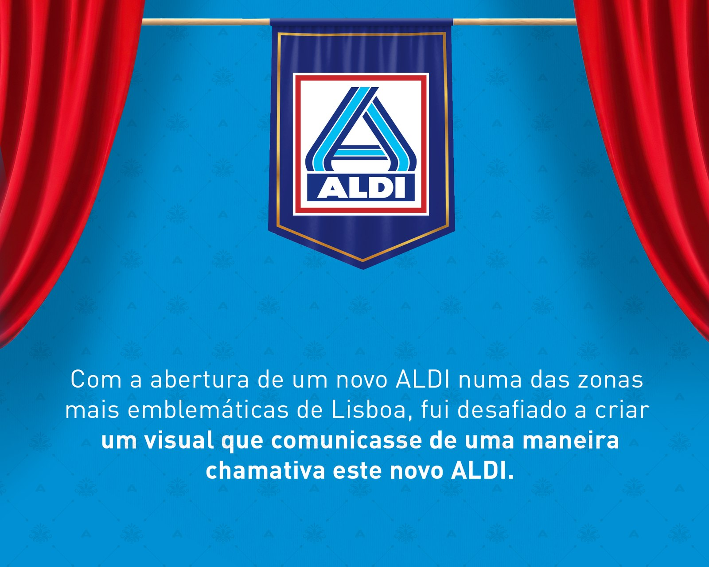
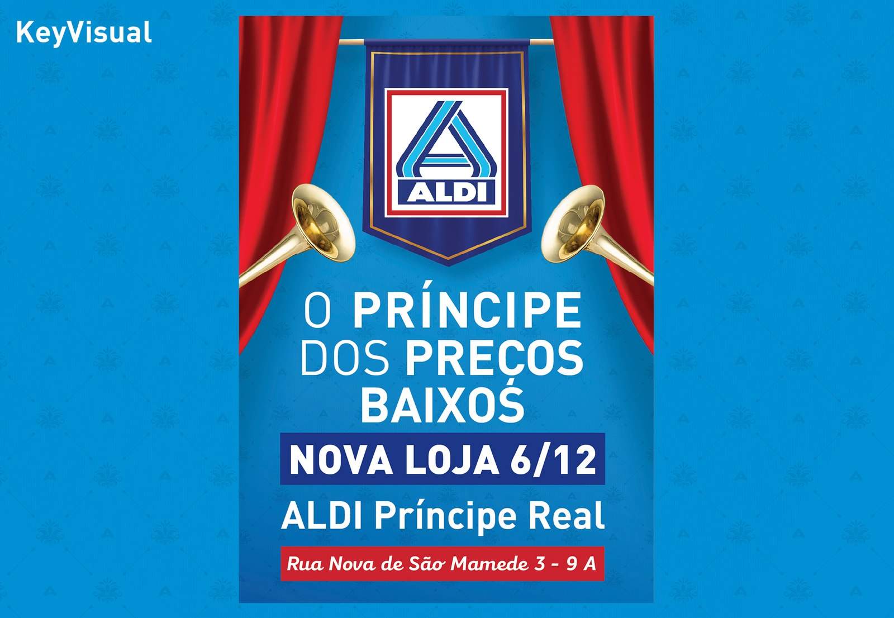
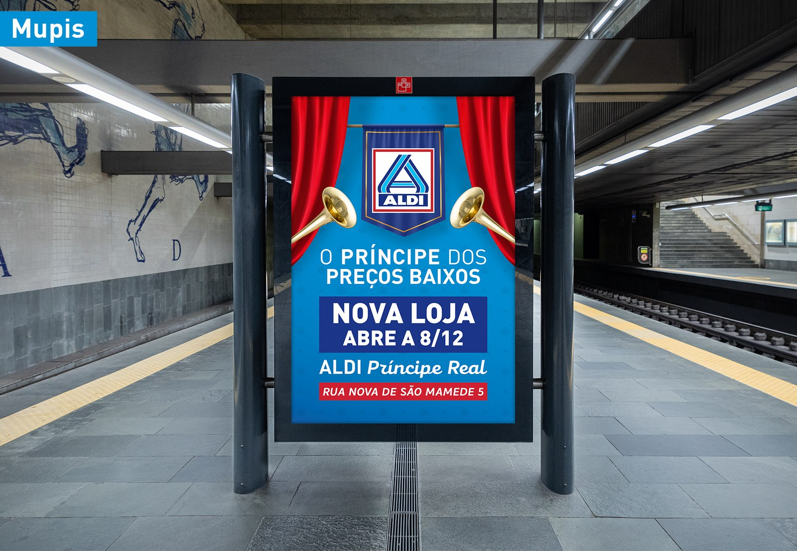
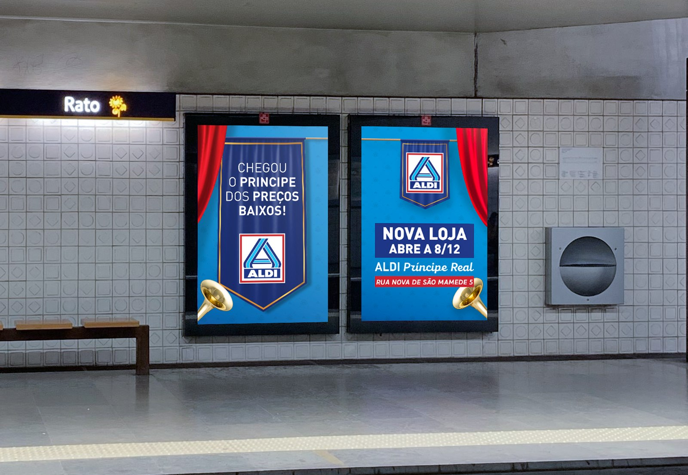
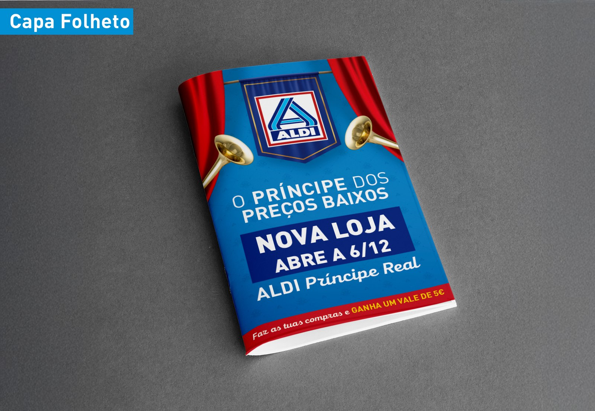
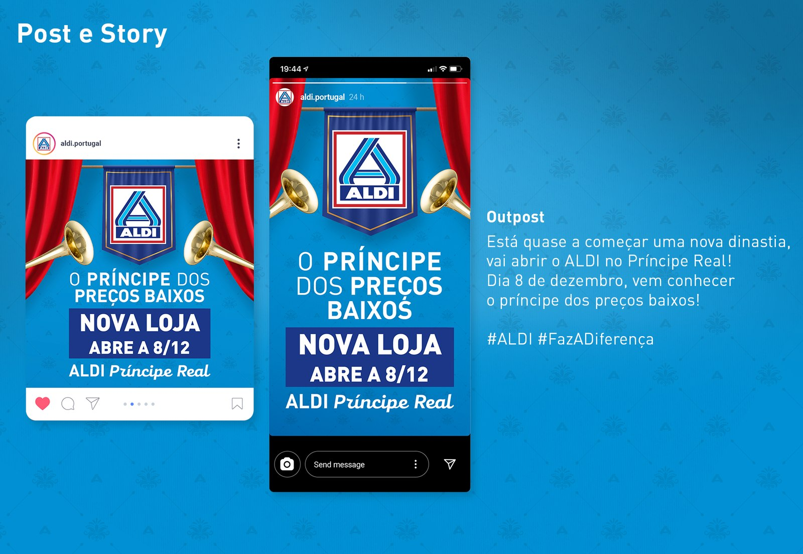
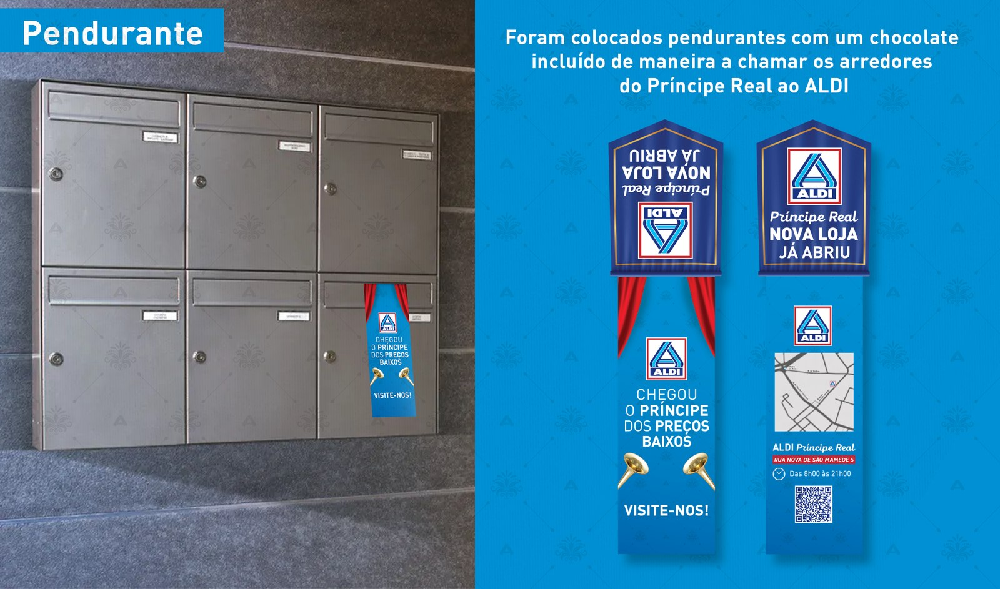
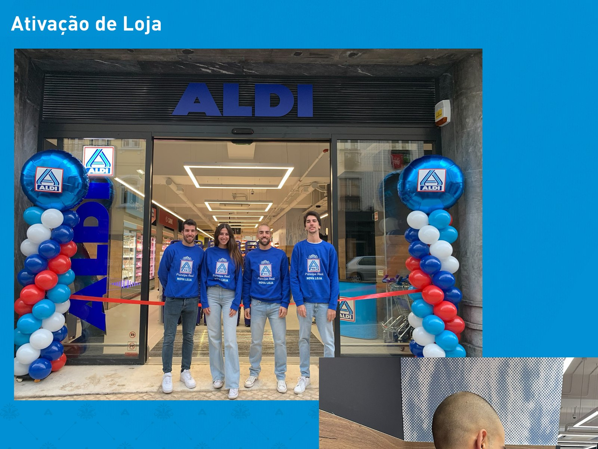
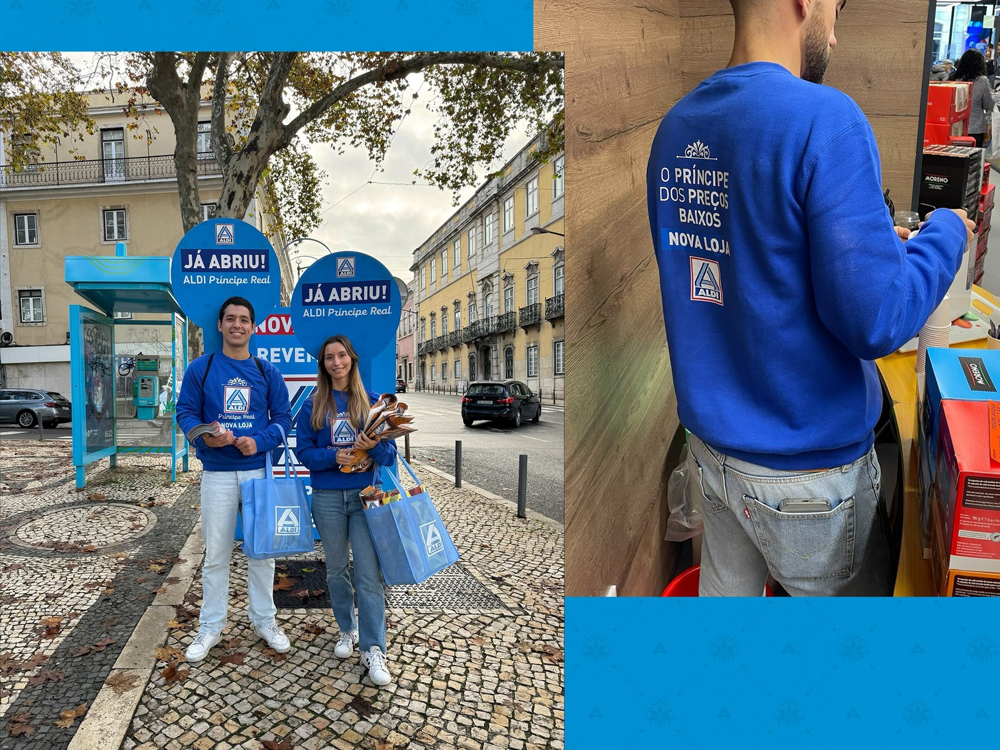
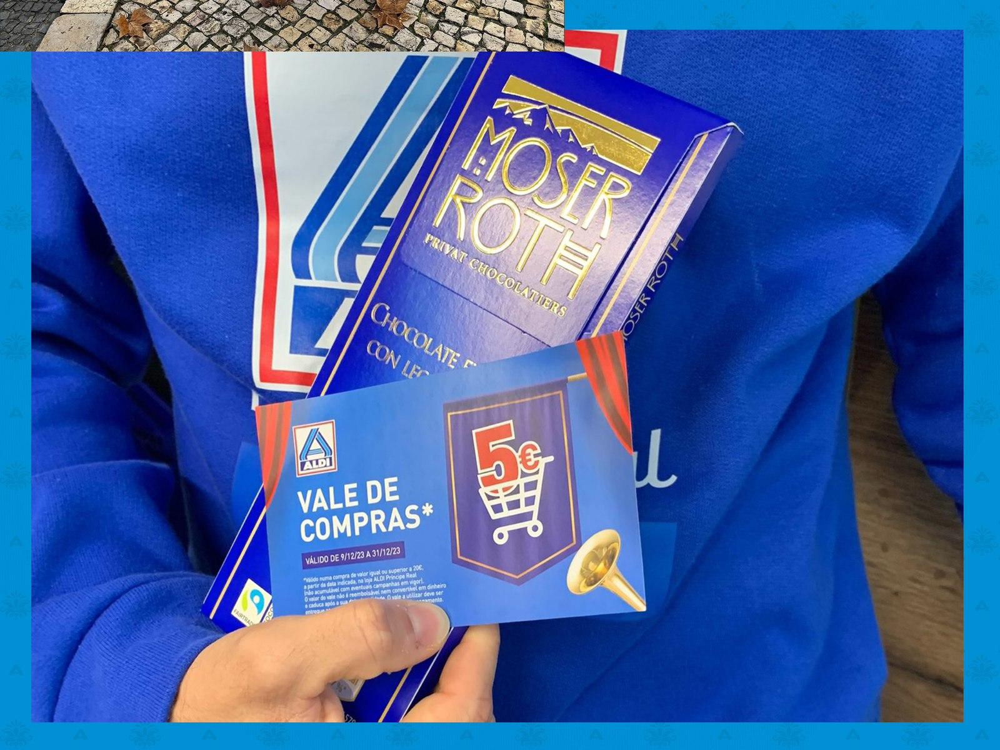
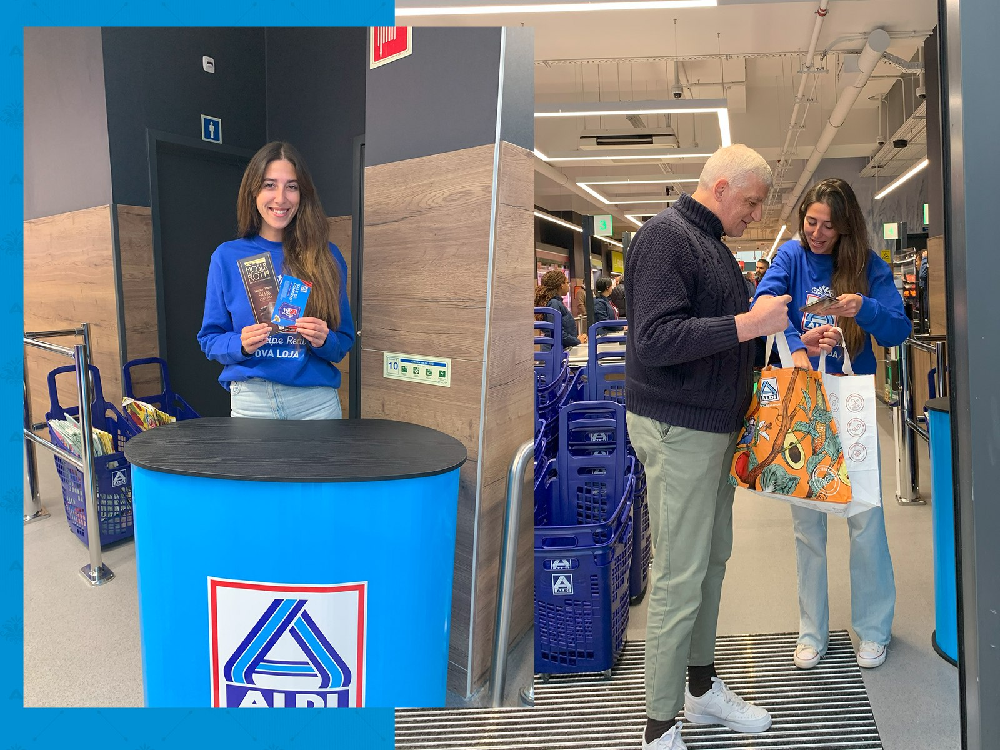
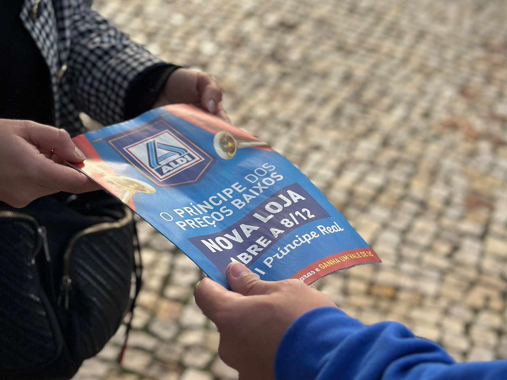